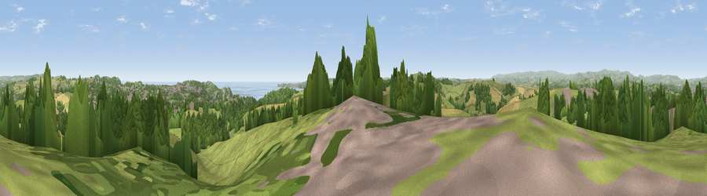

Viewpoint near Marldon
#4003 in England · top 8% of its area beats it · near MarldonThe view, rendered

A 360° render of this exact spot computed from the terrain model, tree cover and land cover — summer colours, afternoon light, calibrated against photographs of famous viewpoints. Real trees, hedges and buildings will differ in detail.
The panorama
Grey silhouette: terrain skyline in each direction (720 bearings, Earth curvature and refraction included). Dashed green: skyline with trees (+15 m) and buildings (+8 m) as obstacles. Blue strip: how far the ground is visible on each bearing.
Where the view opens
Wedge length = distance to the farthest visible ground on that bearing (vegetation-aware). Rings at 10, 25 and 50 km.
What fills the view
47% grassland · 29% woodland · 13% cropland · 9% built-up · 3% water
Angular shares of the visible panorama (visual magnitude), not map area. Landscape diversity 0.56 (0–1 Shannon).
Key numbers
More beautiful places nearby
The staircase of upgrades: each row has a higher view potential than everything closer. Driving times are estimates from straight-line distance, calibrated against real road routing — check an actual route before setting out.
| Place | Direction | Drive | Score |
|---|---|---|---|
| Beacon Hill | SSW · 4 km | ~9 min | 82.3 |
| Viewpoint near Stokeinteignhead | NE · 7 km | ~14 min | 84.1 |
| High Peak | NE · 31 km | ~48 min | 85.3 |
| Golden Cap | ENE · 59 km | ~82 min | 88.7 |
| The Knoll | ENE · 69 km | ~93 min | 91.0 |
50.47519, -3.58150 · source: screening · position refined by local search. Computed location — check access rights before visiting.